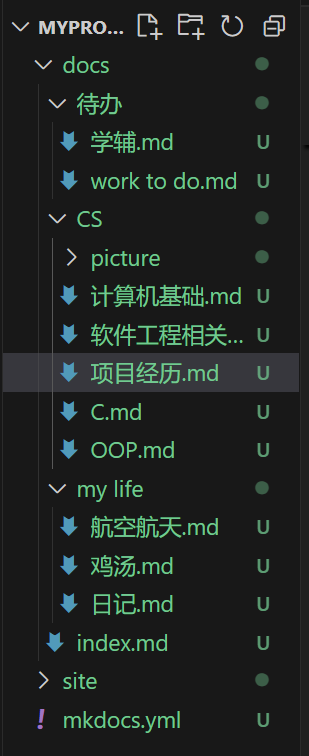
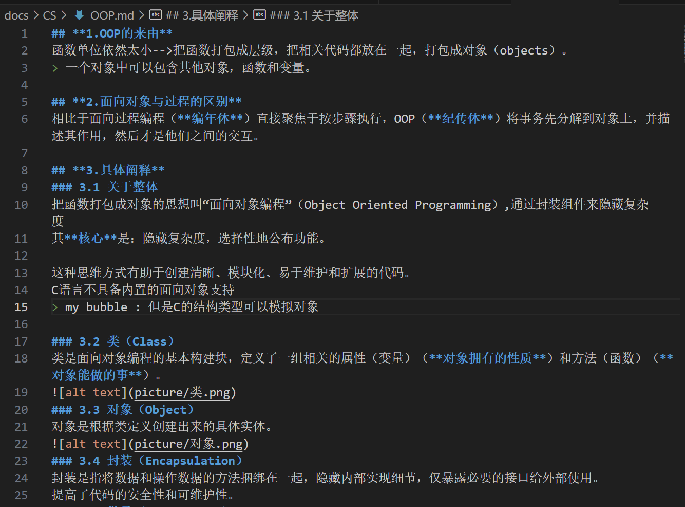
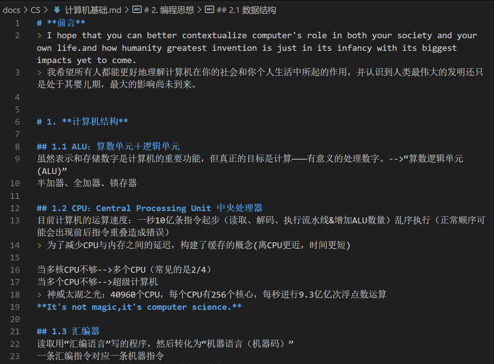
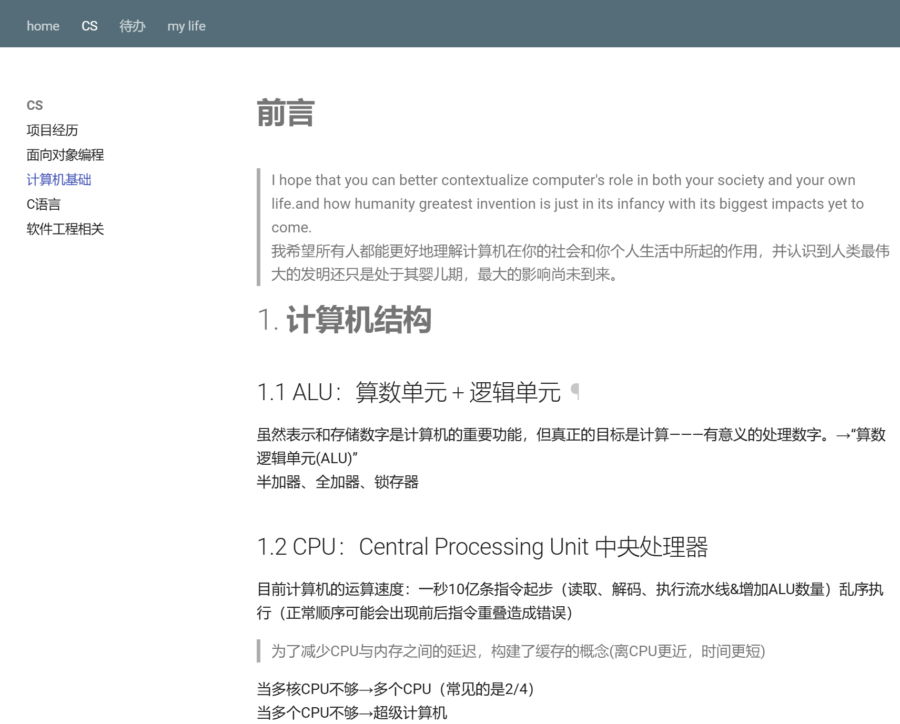

廖若言项目经历—使用mkdocs构建个人网站¶
写在项目之前¶
为什么在学习专业课之前就选择去搭建一个自己的MkDocs 笔记本呢？
契机是在暑假，比我大一届的高中学长分享给我一个github仓库，里面是浙大同学构建的一个庞大的集个人笔记网站，教学资料网站为一体的项目


所以，我想，开学后就构建一个属于自己的笔记网站吧！
（受限于个人能力，在开发时查阅了很多资料，也向学长学姐们寻求了帮助，非常感谢所有帮助过我的人！(๑• . •๑)）
1.前置条件¶
已经下载完成VScode，下面简要阐释安装和配置环境过程。
1.1 下载编译器¶
VSCode只能用来写代码，不能直接编译。所以，我们还必须要有编译器。选择下载MinGW-w64（使 GCC 编译器能够在 Windows 环境下运行）。
1.2 配置MinGW¶
环境变量-系统变量-path，添加bin路径。
1.3 安装所需要的扩展插件¶
此处需要Python扩展。安装后需要重启。
2.mkdocs安装¶
在控制台运行pip install mkdocs，并查看mkdocs是否安装成功:mkdocs --version。
3.创建过程¶
3.1 初步搭建¶
运行mkdocs new dir_name--->创建一个站点
这个命令会在当前目录下创建一个目录（dir_name）。名字可更换

- 在创建的目录下，有一个子目录docs，其中包含了源文件、页面等数据；
- 在创建的目录下，有一个文件mkdocs.yml，这就是配置文件(这是一个YAML格式文件)；
然后进入我重命名的目录，运行mkdocs serve，即可在本地访问站点：
在浏览器输入地址 http://127.0.0.1:8000，就可以看到初始界面
可以在mkdocs.yml文件中修改站点名（site_name：）
“站点”指的是一个具有特定域名的网站或网页集合。一个网站可以包含多个页面
3.2 markdown和YAML¶
每一个页面就是一个md文件，配置文件是YAML格式
关于YAML：
YAML 的语法和其他高级语言类似，并且可以简单表达清单、散列表，标量等数据形态，使用空白符号缩进和大量依赖外观的特色，特别适合用来表达或编辑数据结构、各种配置文件、文件大纲。
3.3 添加页面¶
在docs目录下创建页面，以下是目前我的目录

这里值得注意的是：不要忘记在配置文件mkdocs.yml中添加配置项
site_name: My Docs
nav:
- home: index.md
- CS:
- 项目经历: CS\项目经历.md
- 面向对象编程: CS\OOP.md
- 计算机基础: CS\计算机基础.md
- C语言: CS\C.md
- 软件工程相关: CS\软件工程相关.md
- 待办:
- homework to do: 待办\work to do.md
- 学辅工作: 待办\学辅.md
- my life:
- 鸡汤: my life\鸡汤.md
- 日记: my life\日记.md
- 航空航天: my life\航空航天.md
接下来就是内容的填充，不再赘述。
给出一些md格式的文本内容以及网页效果



3.4 更改主题（美化界面）¶
我选择使用一个material主题
首先利用pip下载相应主题
pip install mkdocs-material
然后在配置文件中添加主题：
theme:
name:material
重启站点，就得到了一个新的主题（下面第六点详细叙述）
4.部署站点¶
mkdocs build→在MYPROJECT目录下生成一个目录site，（和docs并列）这个目录中包含了静态站点的页面内容。
接下来切换到GitHub上，创建了一个仓库note

在MYPROJECT下打开git，并将当前目录设置为一个仓库，然后与在GitHub上的仓库note连接：
git init
git remote add origin https://github.com/liaory1220/note.git
mkdocs gh-deploy 将当前目录中site目录下的内容推送到远程
（以上内容目前还不是很能理解，感谢学长出手相助）
然后！！就是见证奇迹的时刻啦！！
浏览器访问 http://liaory1220.github.io/note
所有人都能访问到这个网页啦！！
（关于为什么域名中有github.io: 因为站点托管在GitHub上）
5.扩展与插件¶
PS：以下部分均由学长提供，目前正在努力学习中
site_name: My Docs
nav:
- home: index.md
- CS:
- 项目经历: CS\项目经历.md
- 面向对象编程: CS\OOP.md
- 计算机基础: CS\计算机基础.md
- C语言: CS\C.md
- 软件工程相关: CS\软件工程相关.md
- 待办:
- homework to do: 待办\work to do.md
- 学辅工作: 待办\学辅.md
- my life:
- 鸡汤: my life\鸡汤.md
- 日记: my life\日记.md
- 航空航天: my life\航空航天.md
theme:
name: material
features:
- navigation.tabs
- navigation.tracking # 地址栏中的 URL 会随当前位置变化为对应小节的 URL
- navigation.indexes # 将 index 页面直接附到小节名上
- navigation.top # 回到顶部按钮
- toc.follow # toc 跟随
#- navigation.sections
palette:
# 切换到亮色
- media: "(prefers-color-scheme: light)" # 根据系统的颜色模式自动切换
scheme: default
primary: blue grey
accent: blue grey
toggle:
icon: material/weather-night
name: 切换到暗色模式
# 切换到暗色
- media: "(prefers-color-scheme: dark)"
scheme: slate
primary: blue grey
accent: blue grey
toggle:
icon: material/weather-sunny
name: 切换到亮色模式
extra_css:
- custom.css
- https://cdn.jsdelivr.net/npm/lxgw-wenkai-webfont@1.1.0/style.css
markdown_extensions:
- admonition # 警告语法
- def_list
- attr_list
- footnotes
- abbr
- tables
- meta
- md_in_html
- pymdownx.caret
- pymdownx.critic
- pymdownx.details
- pymdownx.mark
- pymdownx.tilde
- md_in_html
- pymdownx.superfences
- pymdownx.inlinehilite
- pymdownx.keys
- pymdownx.smartsymbols
- pymdownx.tilde
- pymdownx.tasklist:
custom_checkbox: true
- pymdownx.snippets: # 允许将其他文件内容插入文件，语法是 --8<-- "filename.ext" 等，参见 https://facelessuser.github.io/pymdown-extensions/extensions/snippets/#snippets-notation
auto_append:
- includes/abbreviations.md
base_path: ["docs"]
- pymdownx.tabbed:
alternate_style: true
- pymdownx.magiclink:
repo_url_shorthand: true
user: squidfunk
repo: mkdocs-material
- pymdownx.arithmatex: # latex支持
generic: true
- toc:
permalink: true # 固定标题位置为当前位置
toc_depth: 3 # 目录深度
#- codehilite
- pymdownx.emoji:
emoji_index: !!python/name:materialx.emoji.twemoji
emoji_generator: !!python/name:materialx.emoji.to_svg
- pymdownx.highlight: # 代码块高亮
anchor_linenums: true
linenums: true # 显示行号
use_pygments: true # 代码高亮
pygments_lang_class: true
auto_title: true # 显示编程语言名称
linenums_style: pymdownx-inline # 行号样式,防止复制的时候复制行号
extra_javascript:
- https://cdn.jsdelivr.net/npm/mermaid@10.6.1/dist/mermaid.min.js
- https://cdnjs.cloudflare.com/ajax/libs/flowchart/1.17.1/flowchart.min.js
- https://cdnjs.cloudflare.com/ajax/libs/raphael/2.3.0/raphael.min.js
- https://cdnjs.cloudflare.com/ajax/libs/underscore.js/1.13.6/underscore-min.js
- https://cdn.jsdelivr.net/npm/@mermaid-js/mermaid-mindmap@9.3.0/dist/diagram-definition.0faef4c2.min.js
- https://cdn.jsdelivr.net/npm/markdown-it-plantuml@1.4.1/index.min.js
- https://cdnjs.cloudflare.com/ajax/libs/webfont/1.6.28/webfontloader.js
- https://cdnjs.cloudflare.com/ajax/libs/mathjax/3.2.0/es5/tex-mml-chtml.js
- https://cdnjs.cloudflare.com/ajax/libs/mathjax/3.2.0/es5/tex-chtml.js
- https://cdnjs.cloudflare.com/ajax/libs/mathjax/3.2.0/es5/tex-chtml-full.js
- https://cdnjs.cloudflare.com/ajax/libs/mathjax/3.2.0/es5/tex-svg-full.js
- https://cdnjs.cloudflare.com/ajax/libs/KaTeX/0.16.9/katex.min.js
- https://cdnjs.cloudflare.com/ajax/libs/KaTeX/0.16.9/contrib/auto-render.min.js
- https://polyfill.io/v3/polyfill.min.js?features=es6
plugins:
- search
5.0 同步目录¶
见上述3.1节
5.1 主题配置¶
theme:
name: material
features:
- navigation.tabs
- navigation.tracking # 地址栏中的 URL 会随当前位置变化为对应小节的 URL，这意味着当用户在文档中导航时，URL 会动态地反映用户当前所在的页面位置。
- navigation.indexes # 将 index 页面直接附到小节名上（不太理解）
- navigation.top # 回到顶部按钮
- toc.follow # 目录跟随
#- navigation.sections
5.2 Extra CSS¶
extra_css:
- custom.css
- https://cdn.jsdelivr.net/npm/lxgw-wenkai-webfont@1.1.0/style.css
这部分指定了两个额外的 CSS 文件，一个是本地的 custom.css，另一个是从 CDN 加载的 lxgw-wenkai-webfont 字体库。
5.3 markdown扩展¶
markdown_extensions:
- admonition
- def_list
- footnotes
- abbr
- tables
- meta
- md_in_html
- pymdownx.caret
- pymdownx.critic
- pymdownx.details
- pymdownx.mark
- pymdownx.tilde
- md_in_html
- pymdownx.superfences
- pymdownx.inlinehilite
- pymdownx.keys
- pymdownx.smartsymbols
- pymdownx.tilde
- pymdownx.tasklist
- pymdownx.snippets
- pymdownx.tabbed
- pymdownx.magiclink
- pymdownx.arithmatex
- toc:
permalink: true
toc_depth: 3
- pymdownx.emoji
- pymdownx.highlight
这部分定义了许多 Markdown 扩展（由第三方库提供，增强 Markdown 的基本语法），包括警告框、定义列表、脚注、缩写、表格、元数据、HTML 内嵌、特殊标记、任务列表、代码高亮等。
MkDocs 使用 markdown 库来解析 Markdown 文件，并允许通过配置文件指定扩展。
5.4 Extra JavaScript¶
extra_javascript:
- https://cdn.jsdelivr.net/npm/mermaid@10.6.1/dist/mermaid.min.js
- https://cdnjs.cloudflare.com/ajax/libs/flowchart/1.17.1/flowchart.min.js
- https://cdnjs.cloudflare.com/ajax/libs/raphael/2.3.0/raphael.min.js
- https://cdnjs.cloudflare.com/ajax/libs/underscore.js/1.13.6/underscore-min.js
- https://cdn.jsdelivr.net/npm/@mermaid-js/mermaid-mindmap@9.3.0/dist/diagram-definition.0faef4c2.min.js
- https://cdn.jsdelivr.net/npm/markdown-it-plantuml@1.4.1/index.min.js
- https://cdnjs.cloudflare.com/ajax/libs/webfont/1.6.28/webfontloader.js
- https://cdnjs.cloudflare.com/ajax/libs/mathjax/3.2.0/es5/tex-mml-chtml.js
- https://cdnjs.cloudflare.com/ajax/libs/mathjax/3.2.0/es5/tex-chtml.js
- https://cdnjs.cloudflare.com/ajax/libs/mathjax/3.2.0/es5/tex-chtml-full.js
- https://cdnjs.cloudflare.com/ajax/libs/mathjax/3.2.0/es5/tex-svg-full.js
- https://cdnjs.cloudflare.com/ajax/libs/KaTeX/0.16.9/katex.min.js
- https://cdnjs.cloudflare.com/ajax/libs/KaTeX/0.16.9/contrib/auto-render.min.js
- https://polyfill.io/v3/polyfill.min.js?features=es6
这部分使用 CDN 加载了许多 JavaScript 库，包括 Mermaid（用于绘制图表）、Flowchart（用于绘制流程图）、MathJax（用于渲染数学公式）和 KaTeX（用于渲染数学公式）。此外，还有 WebFontLoader（用于加载自定义字体），以及 polyfill（用于兼容性处理）。
5.5 插件¶
plugins:
- search
内置插件，用于提供搜索功能
6.注意事项¶
6.1 serve¶
每次清空工作台后，更新内容需要重新命令mkdocs serve
6.2 更新目录¶
在新建文件后不要忘记把文件路径添加到配置文件里~